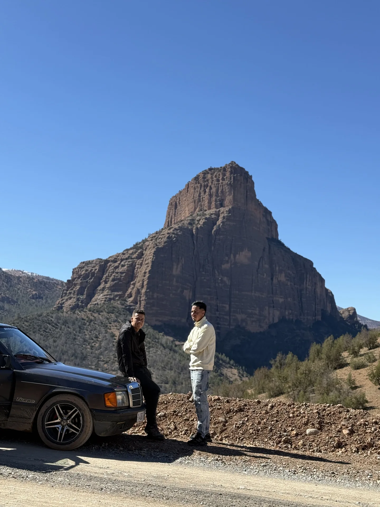
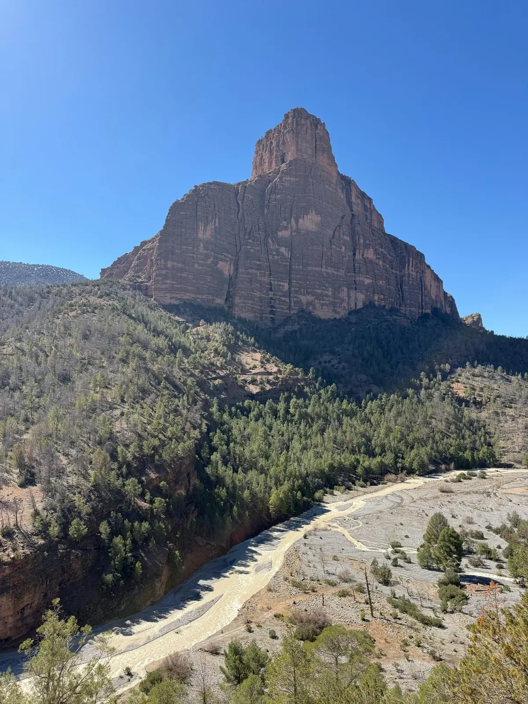
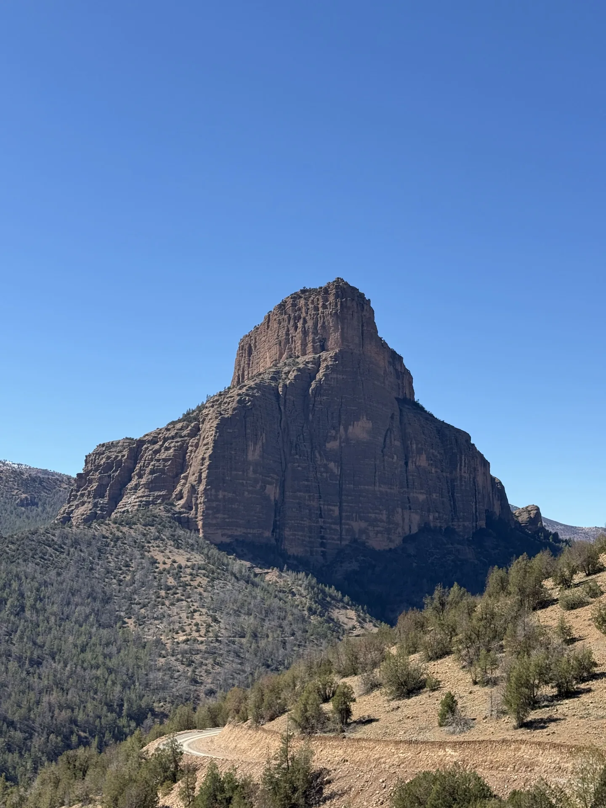
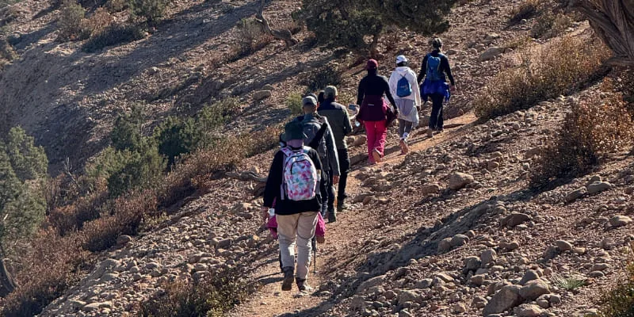
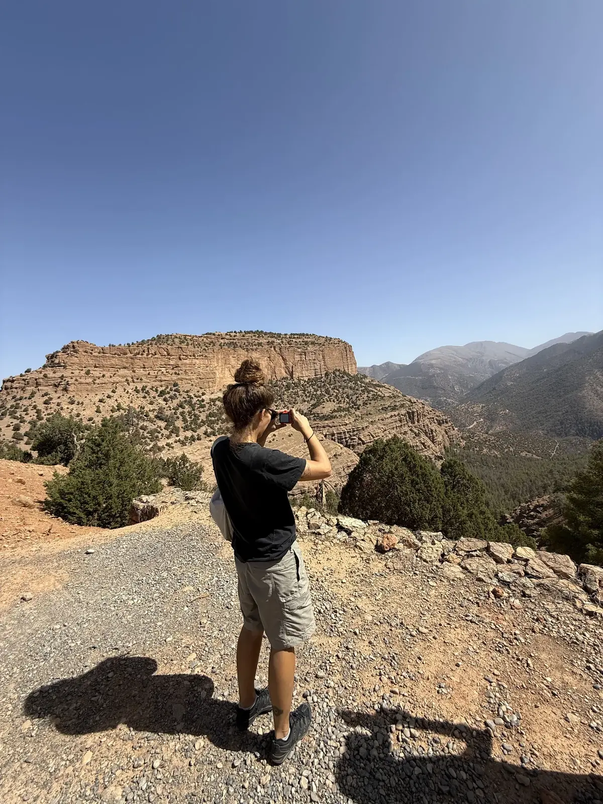
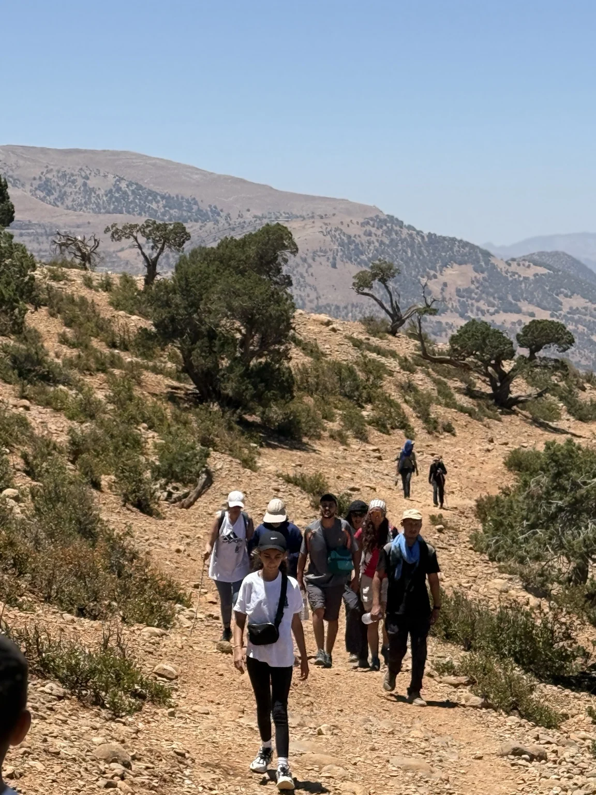

معرفة المكان قبل الوصول
نشاركك إرشادات عملية حول المناخ والمسالك والأنشطة المتاحة خلال السنة، مع التأكيد على ضرورة التحقق من الظروف الفعلية قبل السفر.
اقرأ مقالات تساعدك على الاستعداد للمغامرة: موسم التجديف، ومسارات المشي الجبلي، وتجهيزات التخييم، واكتشاف القرى ومضايق وادي أحنصال.
طلب حجز ↗تعرّف على المزيدنشاركك إرشادات عملية حول المناخ والمسالك والأنشطة المتاحة خلال السنة، مع التأكيد على ضرورة التحقق من الظروف الفعلية قبل السفر.
من قمة جبل مسفران إلى مضايق أحنصال، تجد أفكاراً متنوعة للرحلات والصور والتجارب المناسبة لمستويات مختلفة.
تتضمن مقالاتنا نصائح لاحترام السكان والطبيعة وتجنب المخاطر في المناطق الجبلية والمائية.
 موسم الرافتينغ في واد أحنصالمتى يكون أفضل وقت للتجديف؟
موسم الرافتينغ في واد أحنصالمتى يكون أفضل وقت للتجديف؟ الرافتينغ للمبتدئين في مسفرانالمعدات والإرشادات واختيار المسار المناسب.
الرافتينغ للمبتدئين في مسفرانالمعدات والإرشادات واختيار المسار المناسب. واد أحنصال وآسيف ملولنهران جبليان يختلفان حسب الصبيب.
واد أحنصال وآسيف ملولنهران جبليان يختلفان حسب الصبيب. الدراجات الجبلية في مسفراناكتشاف المسالك الجبلية بالدراجة.
الدراجات الجبلية في مسفراناكتشاف المسالك الجبلية بالدراجة. معدات ركوب الدراجة الجبلية في الأطلسالخوذة والماء والعجلات والتحضير للجولة.
معدات ركوب الدراجة الجبلية في الأطلسالخوذة والماء والعجلات والتحضير للجولة. جولة بالدراجة قرب تيلوكيتاختيار المسار حسب مستوى المشاركين.
جولة بالدراجة قرب تيلوكيتاختيار المسار حسب مستوى المشاركين.
كيفاش توصل لمسفران من بني ملال أو أزيلالالطرق الرئيسية عبر واويزغت وتيلوكيت.
رحلة عبر وادي أحنصالقرى ومضايق ومناظر بانورامية. التخييم البري في مسفرانالتخييم مع احترام الطبيعة والسكان.
التخييم البري في مسفرانالتخييم مع احترام الطبيعة والسكان. شنو تجيب معاك للكَمبينغ في الأطلسلائحة عملية لقضاء ليلة في الجبل.
شنو تجيب معاك للكَمبينغ في الأطلسلائحة عملية لقضاء ليلة في الجبل.
الصعود لقمة جبل مسفرانجبل مميز يبلغ ارتفاعه نحو 1868 متراً. الروندوني في مضايق أحنصالالمشي وسط الجروف والمناظر النهرية.
الروندوني في مضايق أحنصالالمشي وسط الجروف والمناظر النهرية. شلالات أوخودن قرب مسفرانخرجة طبيعية تختلف حسب الفصل.
شلالات أوخودن قرب مسفرانخرجة طبيعية تختلف حسب الفصل.
نصائح السلامة في جبال الأطلسالطقس والماء والاتجاهات وتدبير الوقت. تيلوكيت بوابة مغامرات مسفرانبوابة لاكتشاف قرى الأطلس.
تيلوكيت بوابة مغامرات مسفرانبوابة لاكتشاف قرى الأطلس. الثقافة الأمازيغية والضيافة في الأطلساللقاءات والتقاليد واحترام الساكنة.
الثقافة الأمازيغية والضيافة في الأطلساللقاءات والتقاليد واحترام الساكنة.
تصوير مناظر مسفراننصائح لتصوير المناظر مع احترام الطبيعة. أفضل وقت لزيارة مسفرانكل فصل عندو أنشطة وتجارب مختلفة.
أفضل وقت لزيارة مسفرانكل فصل عندو أنشطة وتجارب مختلفة.
برنامج ثلاثة أيام في مسفرانبرنامج مرن بين المشي والقرى والراحة. السياحة المسؤولة في وادي أحنصالالحفاظ على المسالك والمياه وحياة السكان.
السياحة المسؤولة في وادي أحنصالالحفاظ على المسالك والمياه وحياة السكان.تخضع الأنشطة للتوفر والظروف الجوية والطبيعية. نؤكد جميع التفاصيل قبل الحجز.
طلب حجز ↗تحدث إلينا عبر واتساب